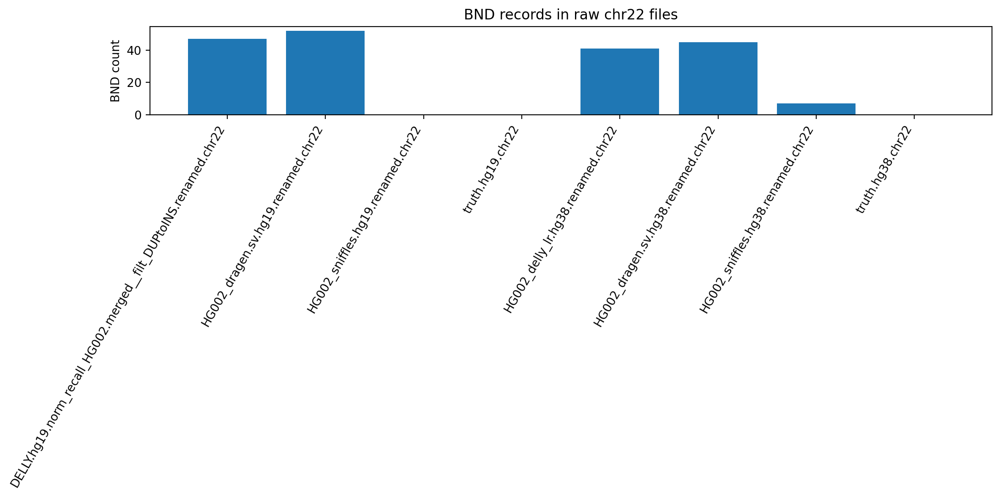
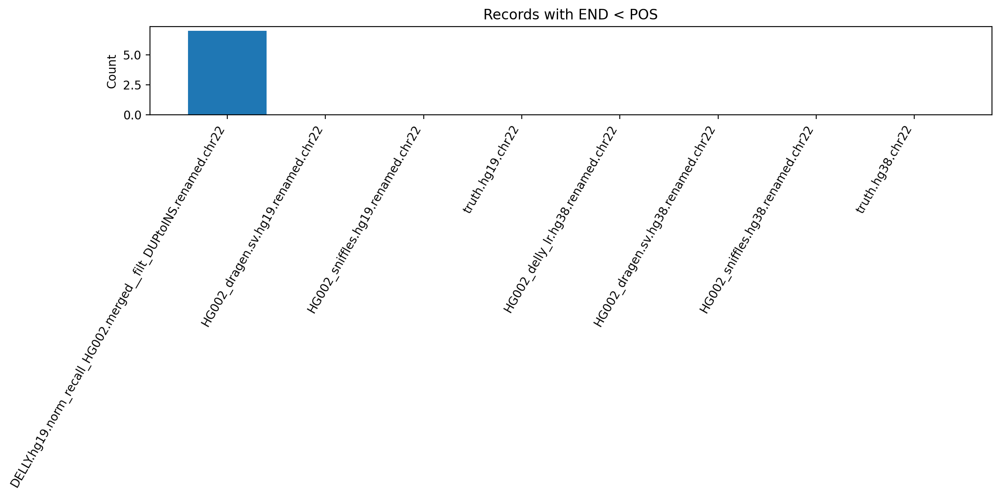
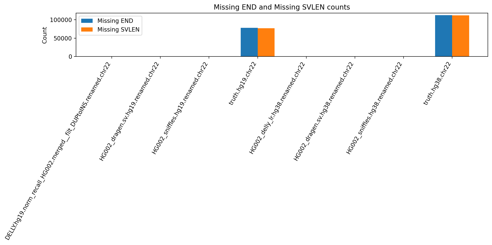
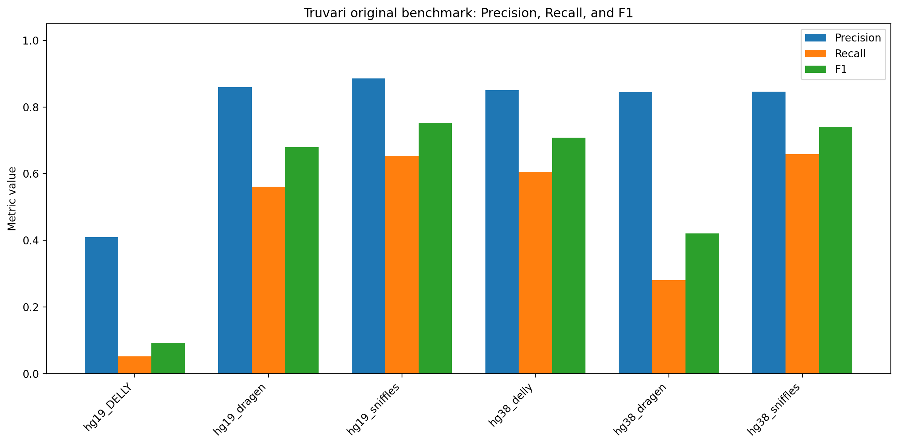
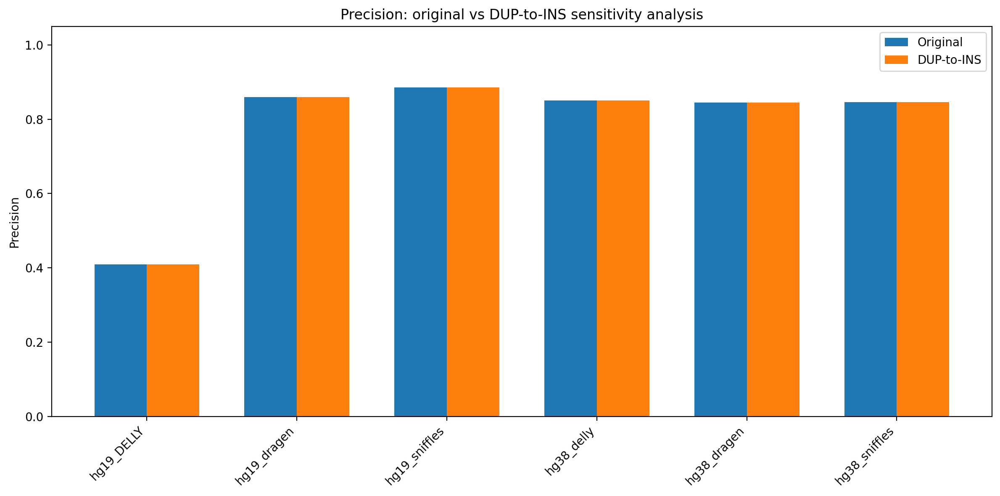
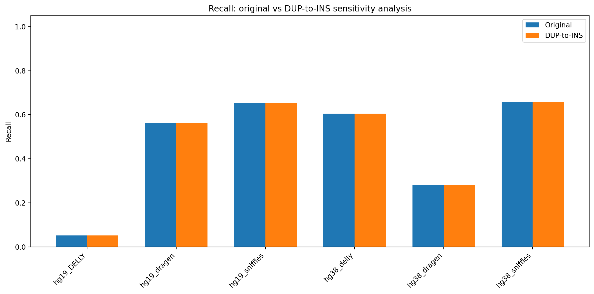
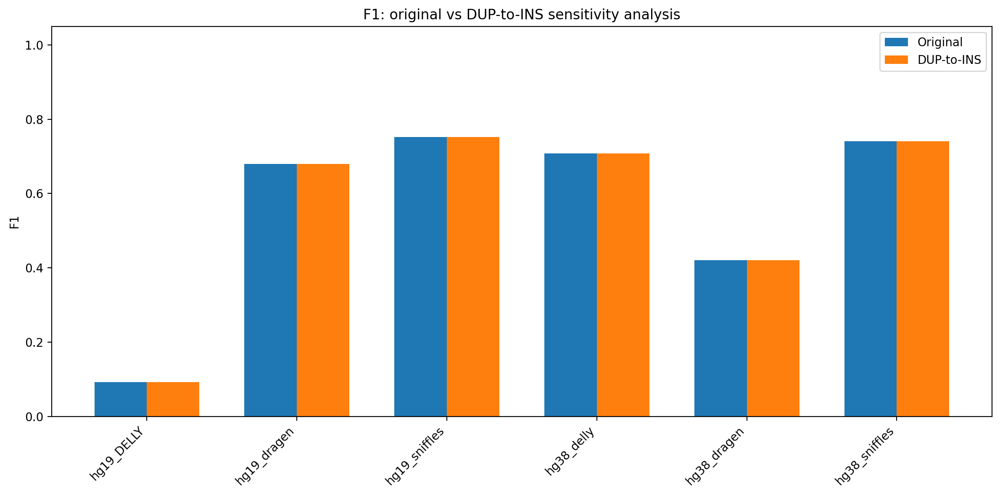
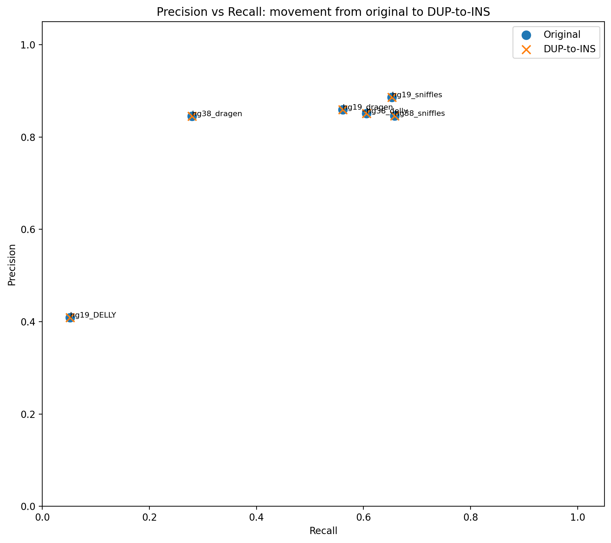
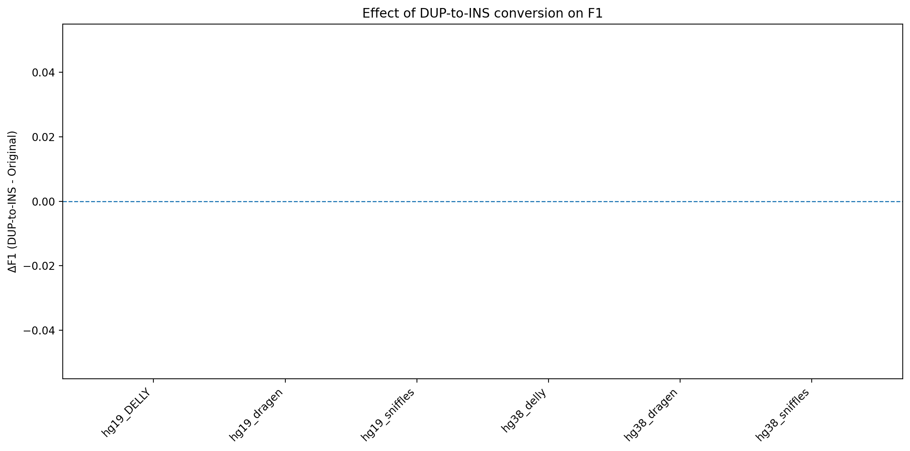

This report summarises the chromosome 22 benchmarking workflow for HG002 structural variant calls from DRAGEN, Sniffles, and DELLY against the truth set in both hg19 / GRCh37 and hg38 / GRCh38. The report focuses on diagnosis, preprocessing, benchmark interpretation, and DUP-to-INS sensitivity analysis.
The original chr22 subsetting problem came from chromosome naming mismatch:
22chr22The main interval-SV benchmark includes:
The following are handled separately and interpreted as exclusions / QC context rather than direct interval benchmark targets:
| build | file | total_records | DEL_DUP_INS_INV | BND | UNKNOWN_NA_missing |
|---|---|---|---|---|---|
| hg19 | DELLY.hg19.norm_recall_HG002.merged__filt_DUPtoINS.renamed.chr22 | 166 | 119 | 47 | 0 |
| hg19 | HG002_dragen.sv.hg19.renamed.chr22 | 628 | 576 | 52 | 0 |
| hg19 | HG002_sniffles.hg19.renamed.chr22 | 512 | 512 | 0 | 0 |
| hg19 | truth.hg19.chr22 | 78767 | 1612 | 0 | 77155 |
| hg38 | HG002_delly_lr.hg38.renamed.chr22 | 1001 | 960 | 41 | 0 |
| hg38 | HG002_dragen.sv.hg38.renamed.chr22 | 344 | 299 | 45 | 0 |
| hg38 | HG002_sniffles.hg38.renamed.chr22 | 838 | 831 | 7 | 0 |
| hg38 | truth.hg38.chr22 | 114070 | 2276 | 0 | 111794 |
============================== hg19 benchmark-ready interval VCFs ============================== ===== 03_benchmark_inputs/hg19_interval/DELLY.hg19.norm_recall_HG002.merged__filt_DUPtoINS.renamed.chr22.interval.vcf.gz ===== Records: 119 SVTYPE counts: 55 DEL 52 INS 12 INV ===== 03_benchmark_inputs/hg19_interval/HG002_dragen.sv.hg19.renamed.chr22.interval.vcf.gz ===== Records: 576 SVTYPE counts: 340 INS 236 DEL ===== 03_benchmark_inputs/hg19_interval/HG002_sniffles.hg19.renamed.chr22.interval.vcf.gz ===== Records: 512 SVTYPE counts: 299 INS 213 DEL ===== 03_benchmark_inputs/hg19_interval/truth.hg19.chr22.interval.vcf.gz ===== Records: 1612 SVTYPE counts: 897 INS 715 DEL ============================== hg38 benchmark-ready interval VCFs ============================== ===== 03_benchmark_inputs/hg38_interval/HG002_delly_lr.hg38.renamed.chr22.interval.vcf.gz ===== Records: 960 SVTYPE counts: 504 INS 450 DEL 4 DUP 2 INV ===== 03_benchmark_inputs/hg38_interval/HG002_dragen.sv.hg38.renamed.chr22.interval.vcf.gz ===== Records: 299 SVTYPE counts: 169 INS 130 DEL ===== 03_benchmark_inputs/hg38_interval/HG002_sniffles.hg38.renamed.chr22.interval.vcf.gz ===== Records: 831 SVTYPE counts: 437 INS 390 DEL 4 DUP ===== 03_benchmark_inputs/hg38_interval/truth.hg38.chr22.interval.vcf.gz ===== Records: 2276 SVTYPE counts: 1245 INS 1031 DEL
| build | file | BND_count |
|---|---|---|
| hg19 | DELLY.hg19.norm_recall_HG002.merged__filt_DUPtoINS.renamed.chr22 | 47 |
| hg19 | HG002_dragen.sv.hg19.renamed.chr22 | 52 |
| hg19 | HG002_sniffles.hg19.renamed.chr22 | 0 |
| hg19 | truth.hg19.chr22 | 0 |
| hg38 | HG002_delly_lr.hg38.renamed.chr22 | 41 |
| hg38 | HG002_dragen.sv.hg38.renamed.chr22 | 45 |
| hg38 | HG002_sniffles.hg38.renamed.chr22 | 7 |
| hg38 | truth.hg38.chr22 | 0 |
| build | file | END_lt_POS_records |
|---|---|---|
| hg19 | DELLY.hg19.norm_recall_HG002.merged__filt_DUPtoINS.renamed.chr22 | 7 |
| hg19 | HG002_dragen.sv.hg19.renamed.chr22 | 0 |
| hg19 | HG002_sniffles.hg19.renamed.chr22 | 0 |
| hg19 | truth.hg19.chr22 | 0 |
| hg38 | HG002_delly_lr.hg38.renamed.chr22 | 0 |
| hg38 | HG002_dragen.sv.hg38.renamed.chr22 | 0 |
| hg38 | HG002_sniffles.hg38.renamed.chr22 | 0 |
| hg38 | truth.hg38.chr22 | 0 |
| build | file | missing_END_non_INS | missing_SVLEN |
|---|---|---|---|
| hg19 | DELLY.hg19.norm_recall_HG002.merged__filt_DUPtoINS.renamed.chr22 | 0 | 166 |
| hg19 | HG002_dragen.sv.hg19.renamed.chr22 | 52 | 59 |
| hg19 | HG002_sniffles.hg19.renamed.chr22 | 0 | 0 |
| hg19 | truth.hg19.chr22 | 77870 | 77155 |
| hg38 | HG002_delly_lr.hg38.renamed.chr22 | 0 | 497 |
| hg38 | HG002_dragen.sv.hg38.renamed.chr22 | 45 | 84 |
| hg38 | HG002_sniffles.hg38.renamed.chr22 | 7 | 7 |
| hg38 | truth.hg38.chr22 | 112825 | 111794 |
These plots explain what was counted separately and why those records matter for interpretation.



Truvari was used as the main structural variant benchmarking tool. The table below shows the original benchmark summary metrics.
| run | TP_base | TP_comp | FP | FN | precision | recall | f1 | base_cnt_evaluated | comp_cnt_evaluated | gt_concordance | build | caller |
|---|---|---|---|---|---|---|---|---|---|---|---|---|
| hg19_DELLY | 27 | 27 | 39 | 495 | 0.409091 | 0.051724 | 0.091837 | 522 | 66 | 0.925926 | hg19 | DELLY |
| hg19_dragen | 293 | 293 | 48 | 229 | 0.859238 | 0.561303 | 0.679027 | 522 | 341 | 0.771331 | hg19 | DRAGEN |
| hg19_sniffles | 341 | 341 | 44 | 181 | 0.885714 | 0.653257 | 0.751929 | 522 | 385 | 0.803519 | hg19 | Sniffles |
| hg38_delly | 342 | 342 | 60 | 223 | 0.850746 | 0.605310 | 0.707342 | 565 | 402 | 0.695906 | hg38 | DELLY |
| hg38_dragen | 158 | 158 | 29 | 407 | 0.844920 | 0.279646 | 0.420213 | 565 | 187 | 0.860759 | hg38 | DRAGEN |
| hg38_sniffles | 372 | 372 | 68 | 193 | 0.845455 | 0.658407 | 0.740299 | 565 | 440 | 0.817204 | hg38 | Sniffles |

| run | result_file | SVTYPE | count |
|---|---|---|---|
| hg19_DELLY | tp-base | DEL | 20 |
| hg19_DELLY | tp-base | INS | 7 |
| hg19_DELLY | tp-comp | DEL | 20 |
| hg19_DELLY | tp-comp | INS | 7 |
| hg19_DELLY | fp | DEL | 16 |
| hg19_DELLY | fp | INS | 23 |
| hg19_DELLY | fn | DEL | 158 |
| hg19_DELLY | fn | INS | 337 |
| hg19_dragen | tp-base | DEL | 114 |
| hg19_dragen | tp-base | INS | 179 |
| hg19_dragen | tp-comp | DEL | 114 |
| hg19_dragen | tp-comp | INS | 179 |
| hg19_dragen | fp | DEL | 13 |
| hg19_dragen | fp | INS | 35 |
| hg19_dragen | fn | DEL | 64 |
| hg19_dragen | fn | INS | 165 |
| hg19_sniffles | tp-base | DEL | 134 |
| hg19_sniffles | tp-base | INS | 207 |
| hg19_sniffles | tp-comp | DEL | 134 |
| hg19_sniffles | tp-comp | INS | 207 |
| hg19_sniffles | fp | DEL | 20 |
| hg19_sniffles | fp | INS | 24 |
| hg19_sniffles | fn | DEL | 44 |
| hg19_sniffles | fn | INS | 137 |
| hg38_delly | tp-base | DEL | 136 |
| hg38_delly | tp-base | INS | 206 |
| hg38_delly | tp-comp | DEL | 136 |
| hg38_delly | tp-comp | INS | 206 |
| hg38_delly | fp | DEL | 36 |
| hg38_delly | fp | INS | 24 |
| hg38_delly | fn | DEL | 62 |
| hg38_delly | fn | INS | 161 |
| hg38_dragen | tp-base | DEL | 78 |
| hg38_dragen | tp-base | INS | 80 |
| hg38_dragen | tp-comp | DEL | 78 |
| hg38_dragen | tp-comp | INS | 80 |
| hg38_dragen | fp | DEL | 12 |
| hg38_dragen | fp | INS | 17 |
| hg38_dragen | fn | DEL | 120 |
| hg38_dragen | fn | INS | 287 |
| hg38_sniffles | tp-base | DEL | 149 |
| hg38_sniffles | tp-base | INS | 223 |
| hg38_sniffles | tp-comp | DEL | 149 |
| hg38_sniffles | tp-comp | INS | 223 |
| hg38_sniffles | fp | DEL | 38 |
| hg38_sniffles | fp | INS | 30 |
| hg38_sniffles | fn | DEL | 49 |
| hg38_sniffles | fn | INS | 144 |
Because tandem duplications may be represented either as SVTYPE=DUP or as inserted duplicated sequence
represented as SVTYPE=INS, a sensitivity analysis was carried out.
The main question is whether changing DUP representation to INS changes precision, recall, or F1.
============================== hg19 DUP-to-INS converted interval VCFs ============================== ===== 03_benchmark_inputs/hg19_interval_dup_to_ins/DELLY.hg19.norm_recall_HG002.merged__filt_DUPtoINS.renamed.chr22.interval.dup_to_ins.vcf.gz ===== Records: 119 SVTYPE counts: 55 DEL 52 INS 12 INV ===== 03_benchmark_inputs/hg19_interval_dup_to_ins/HG002_dragen.sv.hg19.renamed.chr22.interval.dup_to_ins.vcf.gz ===== Records: 576 SVTYPE counts: 340 INS 236 DEL ===== 03_benchmark_inputs/hg19_interval_dup_to_ins/HG002_sniffles.hg19.renamed.chr22.interval.dup_to_ins.vcf.gz ===== Records: 512 SVTYPE counts: 299 INS 213 DEL ===== 03_benchmark_inputs/hg19_interval_dup_to_ins/truth.hg19.chr22.interval.dup_to_ins.vcf.gz ===== Records: 1612 SVTYPE counts: 897 INS 715 DEL ============================== hg38 DUP-to-INS converted interval VCFs ============================== ===== 03_benchmark_inputs/hg38_interval_dup_to_ins/HG002_delly_lr.hg38.renamed.chr22.interval.dup_to_ins.vcf.gz ===== Records: 960 SVTYPE counts: 508 INS 450 DEL 2 INV ===== 03_benchmark_inputs/hg38_interval_dup_to_ins/HG002_dragen.sv.hg38.renamed.chr22.interval.dup_to_ins.vcf.gz ===== Records: 299 SVTYPE counts: 169 INS 130 DEL ===== 03_benchmark_inputs/hg38_interval_dup_to_ins/HG002_sniffles.hg38.renamed.chr22.interval.dup_to_ins.vcf.gz ===== Records: 831 SVTYPE counts: 441 INS 390 DEL ===== 03_benchmark_inputs/hg38_interval_dup_to_ins/truth.hg38.chr22.interval.dup_to_ins.vcf.gz ===== Records: 2276 SVTYPE counts: 1245 INS 1031 DEL
| run | original_precision | dup_to_ins_precision | delta_precision | original_recall | dup_to_ins_recall | delta_recall | original_f1 | dup_to_ins_f1 | delta_f1 | original_TP_base | dup_to_ins_TP_base | original_FP | dup_to_ins_FP | original_FN | dup_to_ins_FN | build | caller |
|---|---|---|---|---|---|---|---|---|---|---|---|---|---|---|---|---|---|
| hg19_DELLY | 0.409091 | 0.409091 | 0.0 | 0.051724 | 0.051724 | 0.0 | 0.091837 | 0.091837 | 0.0 | 27 | 27 | 39 | 39 | 495 | 495 | hg19 | DELLY |
| hg19_dragen | 0.859238 | 0.859238 | 0.0 | 0.561303 | 0.561303 | 0.0 | 0.679027 | 0.679027 | 0.0 | 293 | 293 | 48 | 48 | 229 | 229 | hg19 | DRAGEN |
| hg19_sniffles | 0.885714 | 0.885714 | 0.0 | 0.653257 | 0.653257 | 0.0 | 0.751929 | 0.751929 | 0.0 | 341 | 341 | 44 | 44 | 181 | 181 | hg19 | Sniffles |
| hg38_delly | 0.850746 | 0.850746 | 0.0 | 0.605310 | 0.605310 | 0.0 | 0.707342 | 0.707342 | 0.0 | 342 | 342 | 60 | 60 | 223 | 223 | hg38 | DELLY |
| hg38_dragen | 0.844920 | 0.844920 | 0.0 | 0.279646 | 0.279646 | 0.0 | 0.420213 | 0.420213 | 0.0 | 158 | 158 | 29 | 29 | 407 | 407 | hg38 | DRAGEN |
| hg38_sniffles | 0.845455 | 0.845455 | 0.0 | 0.658407 | 0.658407 | 0.0 | 0.740299 | 0.740299 | 0.0 | 372 | 372 | 68 | 68 | 193 | 193 | hg38 | Sniffles |
These plots show how the benchmark changes when DUP calls are treated as INS in the sensitivity analysis.





The figures above should be used to interpret both performance and representation sensitivity:
In practical terms:
The chromosome 22 workflow was successfully debugged and benchmarked. The original empty chr22 subsets were caused by chromosome naming mismatch, and the later analyses showed:
Generated from files already present in 05_report/qc_tables/ and 05_report/metrics/.